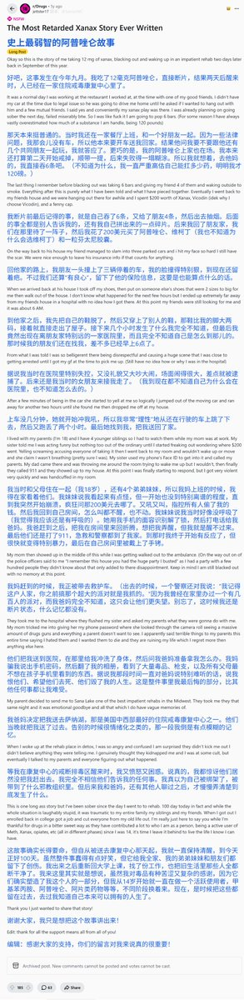

Mithridates VI
@LastDinosaur23
@SalviaSWC 虽然差点笑死，但看到结尾回到大学找工作还就这样戒了还是很感慨…

鼠尾草～🌿
@SalviaSWC
药物报告day20——大量服用安眠药之后的故事
Reddit上一外国小哥分享了自己超剂量服用阿普唑仑之后的失控经历：彻底断了片、出了车祸、进了医院，最后被送进戒毒所。
所以，大家吃药的时候一定要谨慎哦🥺要小心成瘾性地滥用习惯，避免抑制剂联用，确保自己用药时身处安全地带，以免酿成大祸...... https://t.co/GDnDiA6XyM https://t.co/qPs8Nev2sX